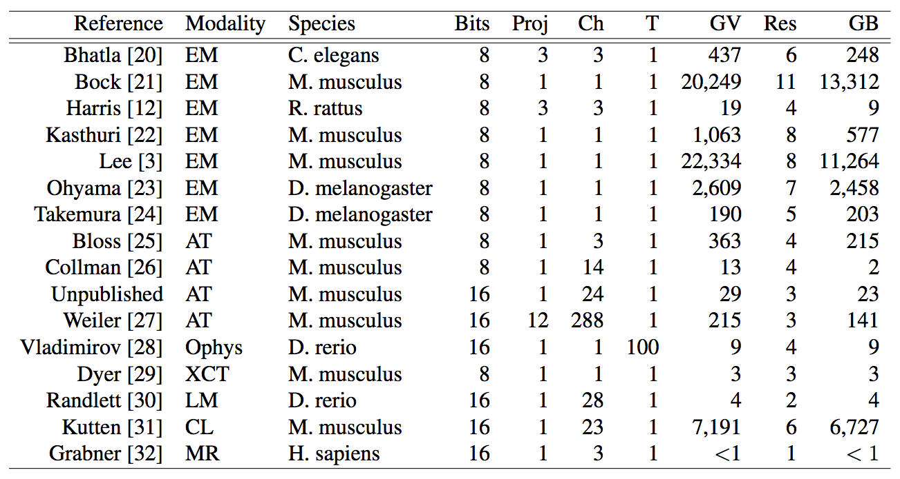
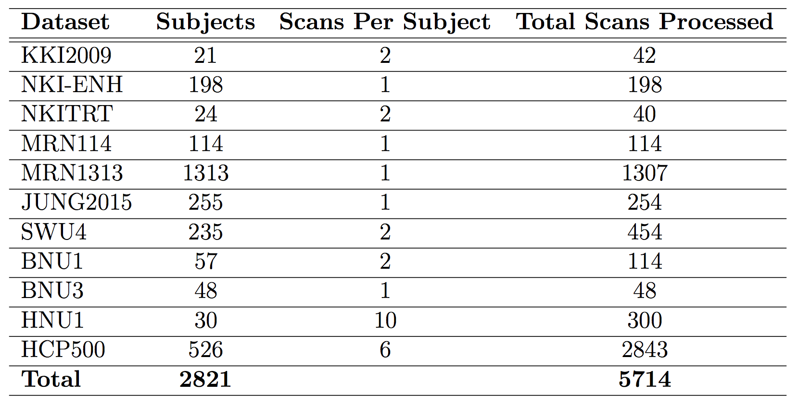
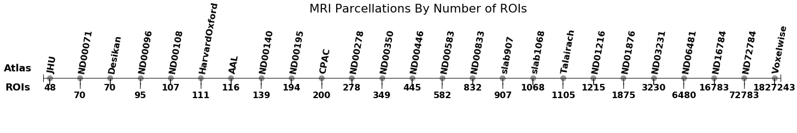

[*Back*](./index.html)
# Datafication
Image Datasets Available in NeuroData. Modalities: EM = Electron Microscopy, AT = Array Tomography, Ophys = Optical Physiology, XCT = X-ray Micro Computational Tomography, LM = Light Microscopy, CL = CLARITY, MR = Magnetic Resonance. Bits = number of bits used to represent the image intensity at a single voxel. Proj = number of databases that make up a given dataset. Ch = channels across an entire dataset. T = timesteps across an entire dataset. GV = approximate number of non-zero gigavoxels (109 voxels). Res = number of resolutions, including the base resolution, that make up the image hierarchy. GB = size of the dataset on disk. In total there are 54,728 gigavoxels across 15 publications with 20 projects containing 396 channels. Total publicly accessible image data stored on disk = 35,195 GB (35TB). This makes NeuroData the world’s largest and most diverse public repository of neuroscience data.

## Magnetic Resonance Imaging (May 2016)
Using the ndmg and CPAC pipelines, both structural and functional connectomes have been estimated from all known publicly re-distributable datasets. These graphs have been generated across multiple brain parcellations/anatomical atlases (http://docs.neurodata.io/nddocs/mrgraphs/atlases.html), ranging in scale from approximately 50 nodes, up through a voxelwise parcellation of nearly 2 million nodes. These graphs can be found through our website (http://docs.neurodata.io/nddocs/mrgraphs/processed_data.html), and downloaded for analysis.


[*Back*](./index.html)